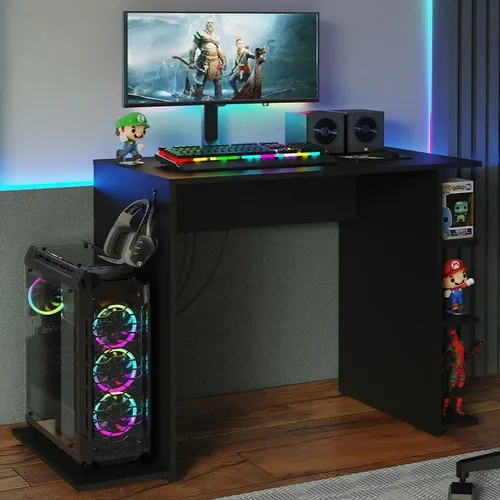

Bienvenido a CompuMundoHiperMegaRed
Tu fuente confiable de información sobre hardware y redes de computadores. Explora nuestros artículos y recursos para aprender más sobre el fascinante mundo de la tecnología.

Tu fuente confiable de información sobre hardware y redes de computadores. Explora nuestros artículos y recursos para aprender más sobre el fascinante mundo de la tecnología.
